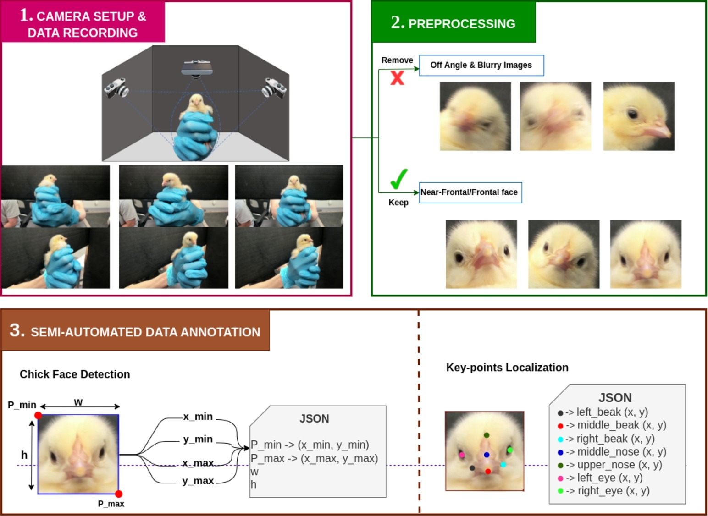
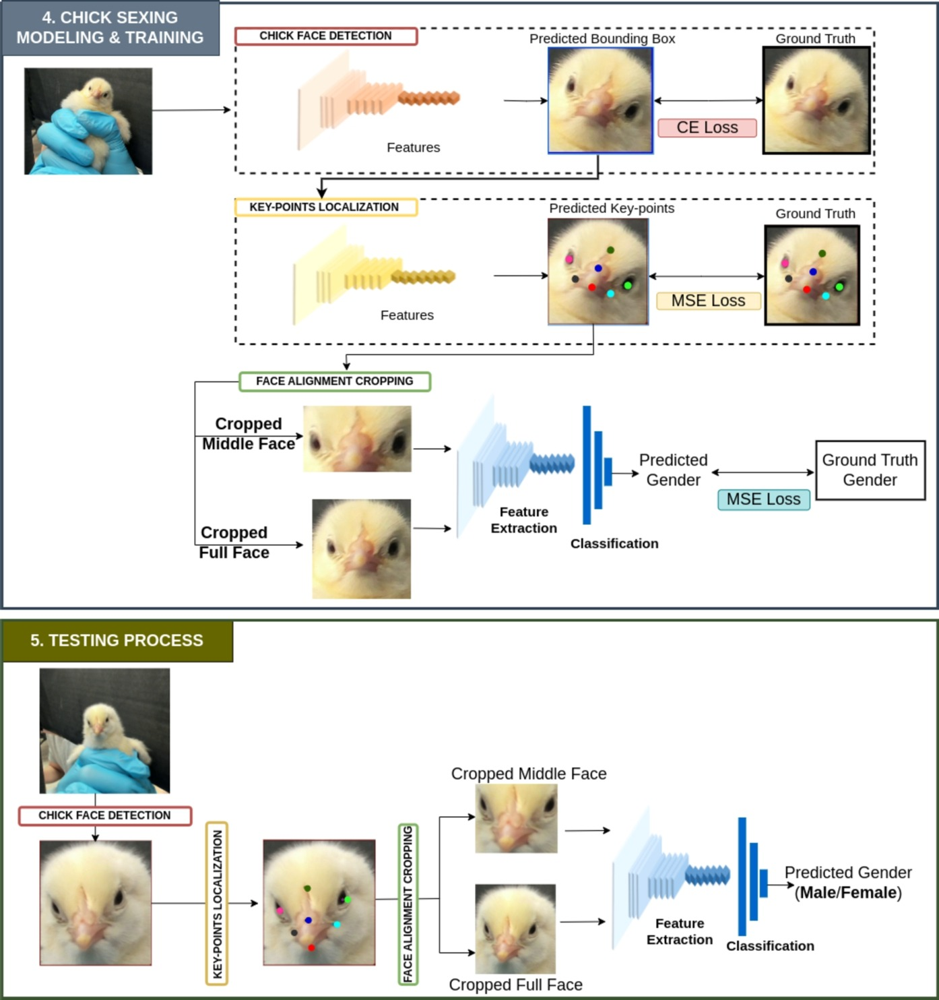
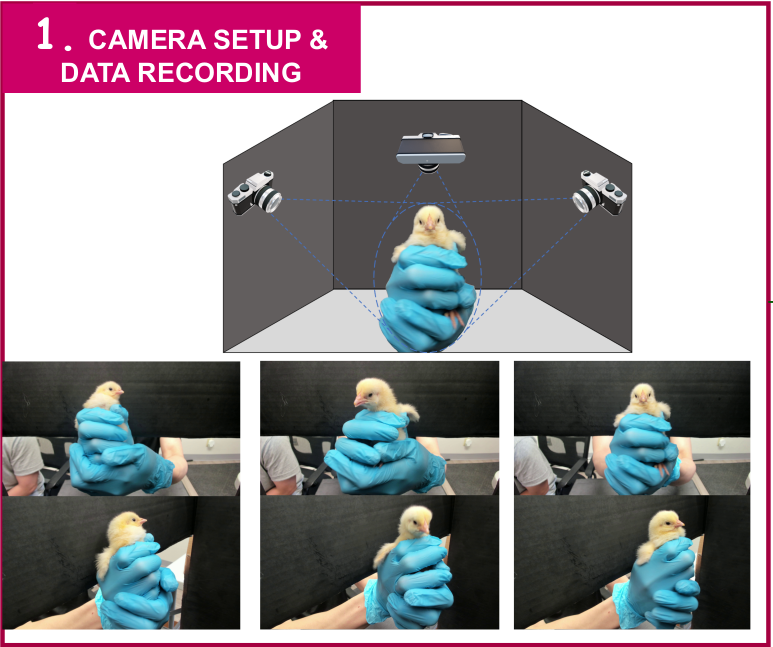
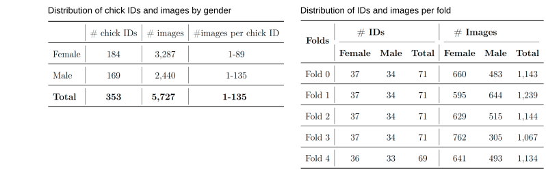
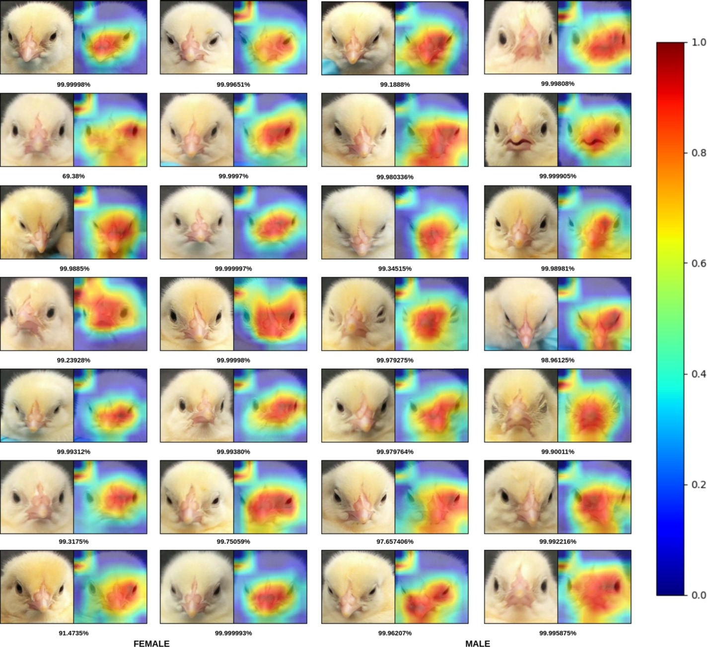
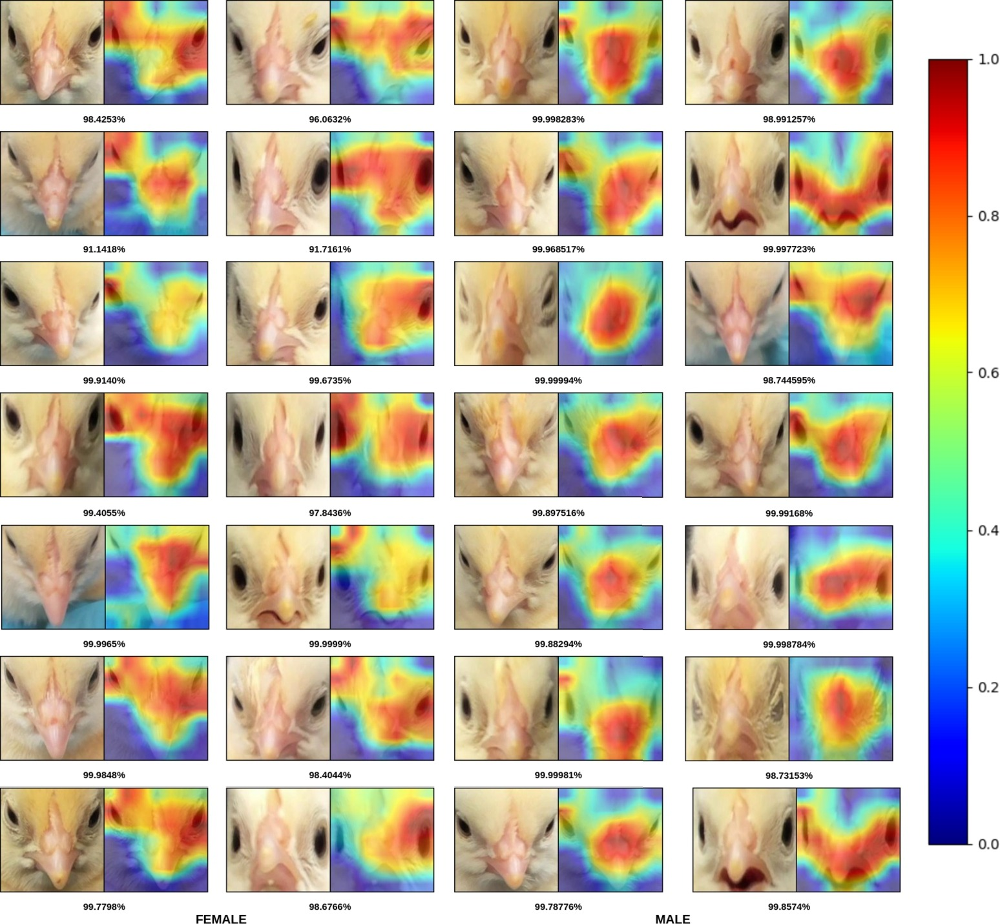
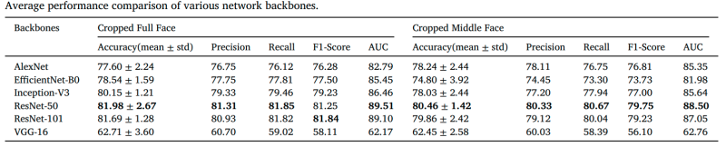

Chick sexing, the process of determining the gender of day-old chicks, is a critical task in the poultry industry due to the distinct roles that each gender plays in production. While effective traditional methods achieve high accuracy, color, and wing feather sexing is exclusive to specific breeds, and vent sexing is invasive and requires trained experts. To address these challenges, we propose a novel approach inspired by facial gender classification techniques in humans: facial chick sexing. This new method does not require expert knowledge and aims to reduce training time while enhancing animal welfare by minimizing chick manipulation. We develop a comprehensive system for training and inference that includes data collection, facial and keypoint detection, facial alignment, and classification. We evaluate our model on two sets of images: Cropped Full Face and Cropped Middle Face, both of which maintain essential facial features of the chick for further analysis. Our experiment demonstrates the promising viability, with a final accuracy of 81.89% on the Cropped Full Face set, of this approach for future practices in chick sexing by making them more universally applicable.
Facial Chick Sexing: An Automated Chick Sexing System from Chick Facial Image
1 University of Arkansas · 2 Cobb-Vantress, Inc
Abstract
System overview


Experimental setup

Dataset statistics

Qualitative results


Quantitative results

Table 1 compares six network backbones using full-face and middle-face chick crops. ResNet-50 achieves the best overall performance for both datasets, reaching 81.98% accuracy, 81.31% precision, 81.85% recall, 81.25% F1-score, and 89.51% AUC with full-face crops. It also leads on the middle-face crops with 80.46% accuracy and an AUC of 88.50%.
ResNet-101 and Inception-V3 provide the closest competing results, whereas VGG-16 performs substantially worse, achieving approximately 62% accuracy for both crop types. The stronger performance of the full-face crop suggests that facial regions outside the central area contain useful sex-related visual information.
These results are particularly promising because chick sex classification from facial images is a relatively unexplored and non-invasive alternative to conventional vent-based inspection. Achieving above 80% accuracy indicates that subtle sex-related facial patterns can be learned directly from images, supporting the feasibility of automated chick sexing without physically manipulating the vent. Based on its consistent performance across both crop settings and the five validation folds, ResNet-50 was selected as the most reliable backbone.
BibTeX
@article{rodriguez2025facial,
title={Facial chick sexing: An automated chick sexing system from chick facial image},
author={Rodriguez, Marta Veganzones and Phan, Thinh and Fernandes, Arthur FA and Breen, Vivian and Arango, Jesus and Kidd, Michael T and Le, Ngan},
journal={Smart Agricultural Technology},
volume={12},
pages={101044},
year={2025},
publisher={Elsevier}
}